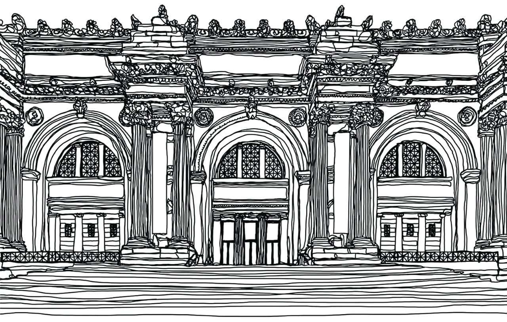
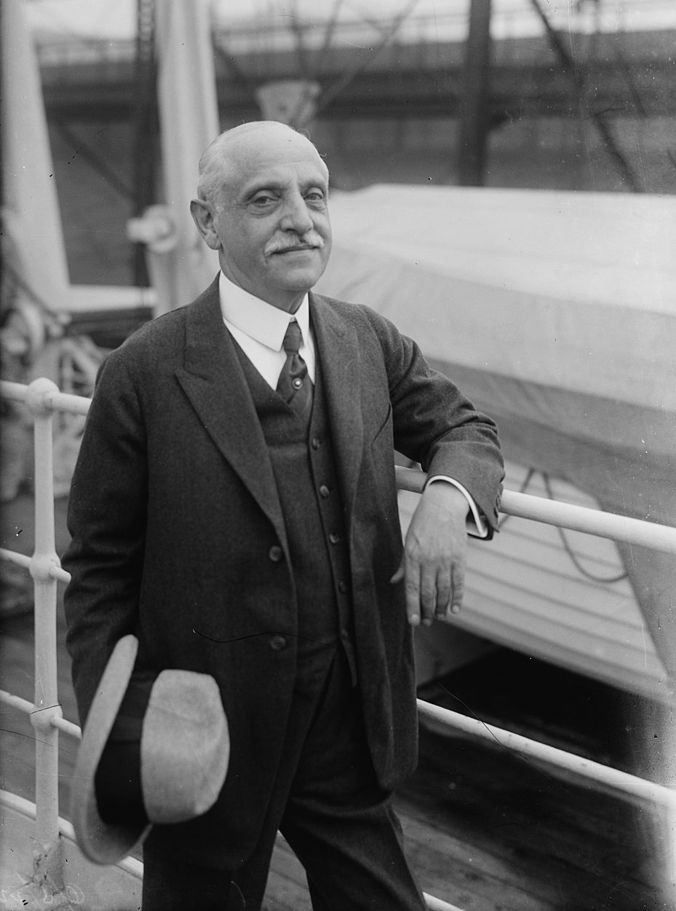
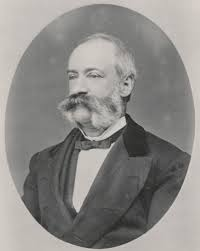

Nice to MET you!
-
-
Unique stories of an art collection
Each artwork can tell us inimitable stories,
where art and commerce convergeThe hidden protagonists of the art world
More than one hundred art dealers contributed to MET collections[1]
But who are the most relevant actors?
Michael Friedsam
1860 - 1931
Jacob S. Rogers
1824 - 1901
He was an American businessman, who bequeathed at his death almost $8 milion to the MET. The museum still acquires art works in his name

George Blumenthal
1858 - 1941
He was an art collector and the seventh president of the Metropolitan Museum of Art
Five centuries of Italian art at MET
The Metropolitan Museum hold 532 Italian paintings by almost three hundreds artists, ranging
from Middle Ages to Nineteenth Century.But who are the most represented artists of this collection?
Since 1870, a cultural lighthouse for the US
The Metropolitan Museum was founded in 1870 and immediately started collecting Italian paintings
Most of the artworks entered the collection between the Great Depression and WWII
Art market, donors and collectors: an evolving collection
A crucial activity for a museum is renew its collection, which can be done in different modalities
MET often accessions new musealia directly through the art market and donations
-
Selected artworks
-
Federico Zeri and the art of connoisseurship
The artworkThe expertiseThe catalogThe Metropolitan has been exhibiting since 1941 a "Portrait of a Knight of Malta", dating back to 1566
The online catalog of the museum defines this artwork as "attributed": there is no evidence that can irrefusably link this painting to a creator. Especially in the 20th century, many solutions were proposed. These hypotheses included artists like El Greco, Jacopino del Conte, Bartolomeo Passerotti, Girolamo Macchietti and Mirabello Cavalori.
BUT WHAT IS THE TRUTH?
The young Federico Zeri, who devoted his final thesis to Jacopino del Conte, rises his doubts about a possible reconstruction attribution to this painter (Margaretta Salinger, 1944). The third paragraph indeed states that:
Inv. no. 41.100.05: The hypothesis about Jacopino del Conte is not acceptable, as it is not supported neither by comparisons with other artworks of his, nor by the date 1566. At this time Jacopino was doing totally different portraits, which are characterised by a very mechanincal and arid style. In my opinion, the painting was not created by this Roman painter, rather by an artist who also knew the pictorial tradition of Northen Italy.
One of the main contribution by Zeri to the understanding of the MET Collection is the creation of four catalogs about Italian painting. The one focused on Northen Italy (1986: 51) mentions the portrait and attributes it to Bartolomeo Passerotti:
The composition is apparently derived from a model current in Rome, very likely by Jacopino del Conte, but the brushwork reflects Venetian technique around the middle of the century, especially that of the young Jacopo Tintoretto. The treatment of highlights, the thin layer of colors, and the general tone are quite typical of Passerotti, and the date is consistent with his work at that moment.
Federico Zeri was eventually only partly right: Jacopino del Conte is not admissible as possible creator of the portrait, yet neither is Passerotti. Recently Privitera proposed Mirabello Cavalori, who is now considered as the correct attributed painter of this portrait.

-
Credits
"Nice to MET you" is a university project for the course "Information Visualization", held by Prof Daquino at MA "Digital Humanities and Digital Knowledge", University of Bologna.
If not differently specified, any content available on this website and on the corresponding GitHub repository falls under the license Attribution 4.0 International (CC-BY 4.0)
- Home
- Works
- About
- Contact
- Hire us